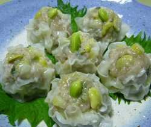

枝豆とアスパラのシュウマイ
- 調理時間：50 分
- （一人当たり）
- カロリー：231kcal
- たんぱく質：13.0g
- 脂質：10.8g
- 塩分：1.3g


＜４人分＞
- 豚ひき肉
- 200g
- 青ネギ
- 3～4本
- アスパラガス
- 2本
- 枝豆（ゆで）
- 100g
- ショウガ
- 少々
- シュウマイの皮
- 30枚
- 片栗粉
- 大さじ1
Ａ
- ・醤油
- 大さじ1
- ・砂糖
- 大さじ1
- ・酒
- 大さじ1
- ・塩
- 小さじ1/2
- ・ゴマ油
- 適量


- 青ネギ、アスパラガスは小口切りにする。ゆでた枝豆はサヤから取り出す。ショウガは千切りにして水にさらす。
- ボウルにひき肉を入れ、Ａの調味料をすべて加えてよく練り合わせる。
- 飾り用の枝豆３０粒を除き、青ネギ、アスパラガス、枝豆、ショウガ、片栗粉を加えて、さらに混ぜ合わせる。
- 親指と人差し指で輪を作り、シュウマイの皮を広げます。中央に具をのせて包み込むように握り、包む。
ヘラやスプーンをつかって表面を平らにして形をととのえる。上に飾り用の枝豆をのせる。 - 蒸し器に並べ、お湯が沸騰してから約１０分くらい蒸して、中まで火が通れば完成。
枝豆とアスパラのシュウマイ
海外では枝豆の人気が年々高まっていることをご存知でしょうか。昨年、海外でインターネットの検索サイト・グーグルをつかって検索された和食のキーワードで最も検索されたキーワードは「寿司」。そして２番目に多かったのは「枝豆」。ちなみに３位以下は、ラーメン、さしみ、天ぷらなど。メジャーな和食が並ぶなかで「枝豆」は大健闘の結果でしょう。
枝豆は大豆が未成熟なうちに収穫したもので、たんぱく質やカルシウムを含む食品です。ビールのおつまみに枝豆がだされますがこれまた合理的な利点があります。枝豆に含まれるメチオニンという栄養素はアルコールの分解を促し、飲みすぎや二日酔いにとっても効果的なのです。近年は幼児の好きな野菜の上位にもあがる枝豆。塩ゆでするだけでおやつにも、おつまみにも世界的に重宝される一品です。